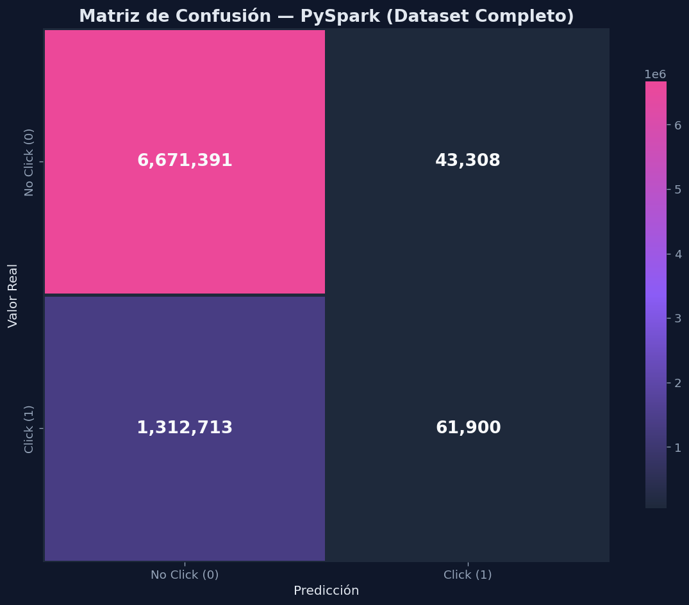
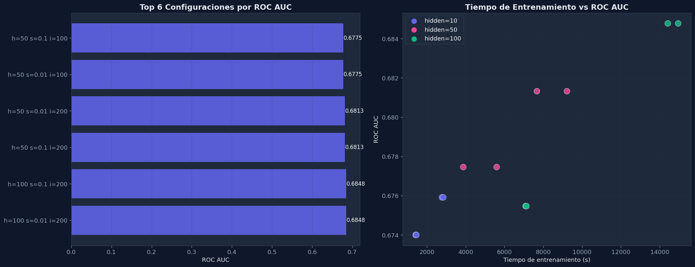

Pipeline de Clasificación con PySpark#
Notebook 3: Pipeline de Clasificación con PySpark
Este notebook escala el flujo de trabajo al dataset completo de Avazu (~40M registros) usando PySpark ML con MultilayerPerceptronClassifier distribuido.
Framework: PySpark ML ~40M registros Procesamiento distribuido
Contenido
1. Carga del dataset completo desde data/raw/train.gz con Spark
2. Feature Engineering — misma transformación temporal que en EDA
3. Reducción de cardinalidad — top 100 valores por columna, resto a OTHER
4. Preprocesamiento — StringIndexer + VectorAssembler + StandardScaler
5. División — randomSplit([0.8, 0.2], seed=42)
6. Entrenamiento — MultilayerPerceptronClassifier con múltiples configuraciones
7. Evaluación — BinaryClassificationEvaluator + métricas de clasificación
8. Guardado del modelo en models/
Requisitos
Dataset en data/raw/train.gz
PySpark instalado y configurado
Suficiente memoria para procesar el dataset completo (~8 GB de RAM recomendados para el driver)
0.1 Configuración del Entorno e Inicio de Spark
Importamos las dependencias, aplicamos el estilo visual oscuro y creamos la sesión de Spark con configuración de memoria extendida (8 GB driver) y timeouts amplios para evitar desconexiones de la JVM durante el procesamiento de ~40M registros.
import sys
import os
import time
from pathlib import Path
PROJECT_ROOT = Path.cwd()
while PROJECT_ROOT != PROJECT_ROOT.parent and not (PROJECT_ROOT / "src").exists():
PROJECT_ROOT = PROJECT_ROOT.parent
if not (PROJECT_ROOT / "src").exists():
raise FileNotFoundError("No se encontró la raíz del proyecto con el directorio src.")
if str(PROJECT_ROOT / "src") not in sys.path:
sys.path.insert(0, str(PROJECT_ROOT / "src"))
# Asegurar que PySpark use el mismo intérprete Python
os.environ["PYSPARK_PYTHON"] = sys.executable
os.environ["PYSPARK_DRIVER_PYTHON"] = sys.executable
import matplotlib.pyplot as plt
import numpy as np
import pandas as pd
import seaborn as sns
from IPython.display import display
from ctr_mlp.config import load_project_settings, apply_dark_style, COLORS, AXES_BG
from ctr_mlp.evaluation import plot_confusion_matrix
from ctr_mlp.feature_engineering import add_time_features_spark
from ctr_mlp.spark_workflow import (
create_spark_session,
prepare_spark_features,
read_ctr_csv_spark,
reduce_cardinality_columns,
run_spark_mlp_search,
evaluate_spark_predictions,
save_spark_model,
)
from ctr_mlp.utils import format_seconds
# Aplicar estilo oscuro profesional
apply_dark_style()
settings = load_project_settings()
paths = settings["paths"]
general = settings["general"]
feature_cfg = settings["features"]
FIGURES_DIR = paths["figures_dir"]
MODELS_DIR = paths["models_dir"]
0.2 Crear Sesión Spark con Memoria Extendida
Creamos la sesión Spark con 8 GB de memoria para el driver, 4 GB para executors, y timeouts extendidos. Esto evita el
ConnectionRefusedErrorque ocurre cuando la JVM se queda sin memoria al procesar columnas de alta cardinalidad con StringIndexer.
# Crear sesión Spark con memoria y timeouts configurados
# (cierra automáticamente cualquier sesión zombie previa)
spark = create_spark_session(
app_name="avazu-ctr-mlp",
shuffle_partitions=general["spark_shuffle_partitions"],
driver_memory="8g",
executor_memory="4g",
)
# Verificación rápida de que Spark está vivo
print(f"Spark version: {spark.version}")
print(f"Spark UI: {spark.sparkContext.uiWebUrl}")
print(f"Driver memory: {spark.sparkContext.getConf().get('spark.driver.memory', 'default')}")
print(f"Network timeout: {spark.sparkContext.getConf().get('spark.network.timeout', 'default')}")
# Test básico de conectividad JVM
spark.range(5).show()
print("Spark está operativo.")
Spark version: 4.1.1
Spark UI: http://LAPTOP-UCIBA847:4040
Driver memory: 8g
Network timeout: 600s
+---+
| id|
+---+
| 0|
| 1|
| 2|
| 3|
| 4|
+---+
Spark está operativo.
1.1 Lectura del Dataset Completo
Leemos el archivo comprimido
train.gzdirectamente con Spark (sin descompresión manual). Reparticionamos el DataFrame para mejorar el paralelismo, ya que gzip no es un formato splittable.
t_load = time.time()
spark_df = read_ctr_csv_spark(
spark,
paths["train_csv"],
infer_schema=False,
repartition=general["spark_repartition"],
)
# Vista previa del esquema
schema_preview = pd.DataFrame(spark_df.dtypes, columns=["column", "spark_type"])
display(schema_preview)
display(spark_df.limit(5).toPandas())
total_rows = spark_df.count()
print(f"\nTotal de registros cargados: {total_rows:,}")
print(f"Particiones después de repartition: {spark_df.rdd.getNumPartitions()}")
print(f"Tiempo de carga: {time.time() - t_load:.1f}s")
| column | spark_type | |
|---|---|---|
| 0 | id | string |
| 1 | click | string |
| 2 | hour | string |
| 3 | C1 | string |
| 4 | banner_pos | string |
| 5 | site_id | string |
| 6 | site_domain | string |
| 7 | site_category | string |
| 8 | app_id | string |
| 9 | app_domain | string |
| 10 | app_category | string |
| 11 | device_id | string |
| 12 | device_ip | string |
| 13 | device_model | string |
| 14 | device_type | string |
| 15 | device_conn_type | string |
| 16 | C14 | string |
| 17 | C15 | string |
| 18 | C16 | string |
| 19 | C17 | string |
| 20 | C18 | string |
| 21 | C19 | string |
| 22 | C20 | string |
| 23 | C21 | string |
| id | click | hour | C1 | banner_pos | site_id | site_domain | site_category | app_id | app_domain | ... | device_type | device_conn_type | C14 | C15 | C16 | C17 | C18 | C19 | C20 | C21 | |
|---|---|---|---|---|---|---|---|---|---|---|---|---|---|---|---|---|---|---|---|---|---|
| 0 | 15630921582298314894 | 1 | 14102111 | 1005 | 1 | 17caea14 | 0dde25ec | f028772b | ecad2386 | 7801e8d9 | ... | 1 | 0 | 19950 | 320 | 50 | 1800 | 3 | 167 | 100081 | 23 |
| 1 | 5983119364350739100 | 0 | 14102904 | 1005 | 0 | 85f751fd | c4e18dd6 | 50e219e0 | 66f5e02e | 6f7ca2ba | ... | 1 | 0 | 22954 | 320 | 50 | 2654 | 3 | 38 | -1 | 23 |
| 2 | 9525925864471698126 | 1 | 14102517 | 1005 | 0 | 85f751fd | c4e18dd6 | 50e219e0 | 9c13b419 | 2347f47a | ... | 1 | 0 | 20632 | 320 | 50 | 2374 | 3 | 39 | -1 | 23 |
| 3 | 67888076147924519 | 0 | 14102802 | 1010 | 1 | 85f751fd | c4e18dd6 | 50e219e0 | b99da644 | 7801e8d9 | ... | 5 | 2 | 22919 | 728 | 90 | 2649 | 0 | 39 | -1 | 204 |
| 4 | 2928053146351541979 | 1 | 14102223 | 1005 | 1 | e151e245 | 7e091613 | f028772b | ecad2386 | 7801e8d9 | ... | 1 | 0 | 4687 | 320 | 50 | 423 | 2 | 39 | 100148 | 32 |
5 rows × 24 columns
Total de registros cargados: 40,428,967
Particiones después de repartition: 100
Tiempo de carga: 611.6s
2.1 Feature Engineering Temporal, Reducción de Cardinalidad y División
Aplicamos la misma transformación temporal que en el EDA (hora, día, franja horaria) usando funciones nativas de Spark SQL. Eliminamos
id,device_ipydevice_id(alta cardinalidad sin valor predictivo). Reducimos la cardinalidad de columnas categóricas con >100 valores únicos (site_id, site_domain, app_id, app_domain, device_model, etc.) manteniendo solo los top 100 valores más frecuentes y agrupando el resto como'OTHER'. Esto es estándar en CTR prediction y evita la explosión de dimensionalidad. Dividimos en 80% train / 20% test.
# Feature engineering temporal
spark_df = add_time_features_spark(spark_df, hour_col=general["hour_col"])
# Eliminar columnas de alta cardinalidad sin valor predictivo
# device_id (~2.6M valores únicos) y device_ip (~6M) crashean StringIndexer
drop_cols = feature_cfg["drop_columns"]
print(f"Columnas eliminadas: {drop_cols}")
spark_df = spark_df.drop(*drop_cols)
# Verificar columnas restantes
print(f"Columnas restantes: {len(spark_df.columns)}")
# Vista previa de features creadas
display(
spark_df.select(
general["target_col"], general["hour_col"],
"event_hour", "event_day", "day_of_week", "time_bucket",
"site_category", "app_category"
).limit(5).toPandas()
)
# --- Reducción de cardinalidad ---
# Detectar columnas categóricas con alta cardinalidad (>100 valores únicos)
from pyspark.sql import functions as F
cat_cols_in_df = [c for c in feature_cfg["spark_categorical"] if c in spark_df.columns]
card_row = spark_df.select(
*[F.approxCountDistinct(c).alias(c) for c in cat_cols_in_df]
).first()
high_card_cols = []
print("\nCardinalidad aproximada de columnas categoricas:")
for c in cat_cols_in_df:
n = card_row[c]
tag = " --> REDUCIR a top 100" if n > 100 else ""
print(f" {c}: ~{n:,}{tag}")
if n > 100:
high_card_cols.append(c)
print(f"\nReduciendo {len(high_card_cols)} columnas a top 100 valores...")
spark_df = reduce_cardinality_columns(spark_df, high_card_cols, top_n=100)
# Cache estrategico despues de reduccion de cardinalidad
spark_df.cache()
# Division train/test
train_df, test_df = spark_df.randomSplit([0.8, 0.2], seed=general["random_state"])
train_count = train_df.count()
test_count = test_df.count()
print(f"\nTrain: {train_count:,} registros | Test: {test_count:,} registros")
Columnas eliminadas: ['id', 'device_ip', 'device_id']
Columnas restantes: 28
| click | hour | event_hour | event_day | day_of_week | time_bucket | site_category | app_category | |
|---|---|---|---|---|---|---|---|---|
| 0 | 0 | 14102923 | 23 | 29 | 4 | noche | 50e219e0 | 8ded1f7a |
| 1 | 0 | 14102923 | 23 | 29 | 4 | noche | 50e219e0 | 8ded1f7a |
| 2 | 0 | 14102923 | 23 | 29 | 4 | noche | 50e219e0 | 8ded1f7a |
| 3 | 0 | 14102923 | 23 | 29 | 4 | noche | 50e219e0 | 8ded1f7a |
| 4 | 0 | 14102923 | 23 | 29 | 4 | noche | 50e219e0 | 8ded1f7a |
c:\Users\juana\anaconda3\envs\deep_env2\Lib\site-packages\pyspark\sql\functions\builtin.py:6552: FutureWarning: Deprecated in 2.1, use approx_count_distinct instead.
warnings.warn("Deprecated in 2.1, use approx_count_distinct instead.", FutureWarning)
Cardinalidad aproximada de columnas categoricas:
C1: ~7
banner_pos: ~7
site_category: ~27
app_category: ~33
device_type: ~5
device_conn_type: ~4
C15: ~8
C16: ~9
C18: ~4
time_bucket: ~4
Reduciendo 0 columnas a top 100 valores...
Train: 32,339,655 registros | Test: 8,089,312 registros
2.2 Verificación de Cardinalidad Reducida
Verificamos que la reducción de cardinalidad funcionó correctamente. Cada columna categórica de alta cardinalidad debería tener <= 101 valores únicos (top 100 + ‘OTHER’). La dimensionalidad del vector de features será ~25 (índices de StringIndexer + numéricas) en lugar de cientos de miles con OneHotEncoder.
# Verificar cardinalidad despues de la reduccion
from pyspark.sql import functions as F
cat_cols_check = [c for c in feature_cfg["spark_categorical"] if c in spark_df.columns]
card_after = spark_df.select(
*[F.approxCountDistinct(c).alias(c) for c in cat_cols_check]
).first()
print("Cardinalidad despues de reduccion:")
for c in cat_cols_check:
print(f" {c}: ~{card_after[c]:,}")
n_cat = len(cat_cols_check)
n_num = len([c for c in feature_cfg["spark_numeric"] if c in spark_df.columns])
print(f"\nTotal columnas categoricas: {n_cat}")
print(f"Total columnas numericas: {n_num}")
print(f"Dimensionalidad estimada del vector de features: ~{n_cat + n_num}")
print("(Solo indices numericos de StringIndexer, sin OneHotEncoder)")
Cardinalidad despues de reduccion:
C1: ~7
banner_pos: ~7
site_category: ~27
app_category: ~33
device_type: ~5
device_conn_type: ~4
C15: ~8
C16: ~9
C18: ~4
time_bucket: ~4
Total columnas categoricas: 10
Total columnas numericas: 5
Dimensionalidad estimada del vector de features: ~15
(Solo indices numericos de StringIndexer, sin OneHotEncoder)
3.1 Pipeline de Preprocesamiento Spark ML
Construimos el pipeline de Spark ML con StringIndexer para convertir categóricas a índices numéricos, VectorAssembler para combinar features y StandardScaler para normalización. Se eliminó OneHotEncoder para evitar la explosión de dimensionalidad (~100K+ columnas sparse) que causaba tiempos de preprocesamiento de 97+ minutos en modo local. La dimensionalidad resultante es de ~25 features (índices + numéricas) en lugar de cientos de miles.
Las columnas categóricas se dividen en dos grupos para el preprocesamiento en Spark:
- Baja cardinalidad (C1, banner_pos, site_category, app_category, device_type, device_conn_type, C15, C16, C18, time_bucket): se procesan con
StringIndexer→OneHotEncoder. - Alta cardinalidad (site_id, site_domain, app_id, app_domain, device_id, device_model, C14, C17, C19, C20, C21): se procesan únicamente con
StringIndexer, usando el índice numérico como feature directa.
OneHotEncoder a columnas como device_id (~2M valores únicos) generaría un vector de features de más de 2 millones de dimensiones, lo cual excede la memoria disponible en entorno local y hace inviable el entrenamiento del MLP. Esta separación es una decisión de ingeniería estándar cuando se trabaja con datasets de alta cardinalidad en Spark ML.
t_prep = time.time()
print(f"Categóricas (baja cardinalidad → OHE): {feature_cfg['spark_categorical']}")
print(f"Alta cardinalidad (solo StringIndexer): {feature_cfg.get('spark_high_cardinality', [])}")
print(f"Numéricas: {feature_cfg['spark_numeric']}")
print()
feature_model, train_features, test_features, feature_col = prepare_spark_features(
train_df=train_df,
test_df=test_df,
categorical_columns=feature_cfg["spark_categorical"],
numeric_columns=feature_cfg["spark_numeric"],
label_col=general["target_col"],
scale_features=True,
high_cardinality_columns=feature_cfg.get("spark_high_cardinality", []),
)
num_features = train_features.select(feature_col).first()[0].size
print(f"\nColumna de features: {feature_col}")
print(f"Dimensionalidad del vector de features: {num_features}")
print(f"Particiones de train preparado: {train_features.rdd.getNumPartitions()}")
print(f"Tiempo de preprocesamiento: {time.time() - t_prep:.1f}s")
Categóricas (baja cardinalidad → OHE): ['C1', 'banner_pos', 'site_category', 'app_category', 'device_type', 'device_conn_type', 'C15', 'C16', 'C18', 'time_bucket']
Alta cardinalidad (solo StringIndexer): ['site_id', 'site_domain', 'app_id', 'app_domain', 'device_id', 'device_model', 'C14', 'C17', 'C19', 'C20', 'C21']
Numéricas: ['event_day', 'event_hour', 'day_of_week', 'is_weekend', 'is_business_hour']
Feature vector size: 135
Train rows: 32,339,655 | Test rows: 8,089,312
Columna de features: features
Dimensionalidad del vector de features: 135
Particiones de train preparado: 100
Tiempo de preprocesamiento: 1153.9s
4.1 Entrenamiento con MultilayerPerceptronClassifier
Entrenamos múltiples configuraciones del MLP distribuido con las combinaciones requeridas: layers [n, 10, 2], [n, 50, 2], [n, 100, 2] con stepSize 0.1 y 0.01, y maxIter 100 y 200. Registramos tiempo de entrenamiento y predicción para cada combinación.
print("Iniciando búsqueda de hiperparámetros Spark MLP...")
print(f"Configuraciones: hidden_widths=(10,50,100) × step_sizes=(0.1,0.01) × max_iters=(100,200)")
print(f"Total: 3 × 2 × 2 = 12 modelos a entrenar\n")
t_search = time.time()
spark_results = run_spark_mlp_search(
train_features=train_features,
test_features=test_features,
feature_col=feature_col,
label_col=general["target_col"],
hidden_layer_widths=(10, 50, 100),
step_sizes=(0.1, 0.01),
max_iters=(100, 200),
seed=general["random_state"],
)
t_search_total = time.time() - t_search
print(f"\nBúsqueda completada en: {format_seconds(t_search_total)}")
print("\nResultados (ordenados por ROC AUC):")
display(spark_results)
Iniciando búsqueda de hiperparámetros Spark MLP...
Configuraciones: hidden_widths=(10,50,100) × step_sizes=(0.1,0.01) × max_iters=(100,200)
Total: 3 × 2 × 2 = 12 modelos a entrenar
Iniciando búsqueda de hiperparámetros Spark MLP...
Configuraciones: hidden_widths=(10, 50, 100) × step_sizes=(0.1, 0.01) × max_iters=(100, 200)
Total: 3 × 2 × 2 = 12 modelos a entrenar
Tamaño del vector de features: 135
[1/12] layers=[135, 10, 2], stepSize=0.1, maxIter=100 ... ROC AUC=0.6740 (24m 8.3s)
[2/12] layers=[135, 10, 2], stepSize=0.1, maxIter=200 ... ROC AUC=0.6759 (46m 12.6s)
[3/12] layers=[135, 10, 2], stepSize=0.01, maxIter=100 ... ROC AUC=0.6740 (23m 34.5s)
[4/12] layers=[135, 10, 2], stepSize=0.01, maxIter=200 ... ROC AUC=0.6759 (47m 19.8s)
[5/12] layers=[135, 50, 2], stepSize=0.1, maxIter=100 ... ROC AUC=0.6775 (64m 33.0s)
[6/12] layers=[135, 50, 2], stepSize=0.1, maxIter=200 ... ROC AUC=0.6813 (153m 38.9s)
[7/12] layers=[135, 50, 2], stepSize=0.01, maxIter=100 ... ROC AUC=0.6775 (93m 12.6s)
[8/12] layers=[135, 50, 2], stepSize=0.01, maxIter=200 ... ROC AUC=0.6813 (127m 47.9s)
[9/12] layers=[135, 100, 2], stepSize=0.1, maxIter=100 ... ROC AUC=0.6755 (118m 5.0s)
[10/12] layers=[135, 100, 2], stepSize=0.1, maxIter=200 ... ROC AUC=0.6848 (249m 14.7s)
[11/12] layers=[135, 100, 2], stepSize=0.01, maxIter=100 ... ROC AUC=0.6755 (118m 48.3s)
[12/12] layers=[135, 100, 2], stepSize=0.01, maxIter=200 ... ROC AUC=0.6848 (240m 21.7s)
Búsqueda completada en: 1317m 28.2s
Resultados (ordenados por ROC AUC):
| accuracy | precision | recall | f1 | roc_auc | true_positive | true_negative | false_positive | false_negative | hidden_width | step_size | max_iter | training_seconds | prediction_seconds | |
|---|---|---|---|---|---|---|---|---|---|---|---|---|---|---|
| 0 | 0.832369 | 0.588358 | 0.045031 | 0.083659 | 0.684774 | 61900.0 | 6671391.0 | 43308.0 | 1312713.0 | 100 | 0.01 | 200 | 14421.695358 | 26.274801 |
| 1 | 0.832369 | 0.588358 | 0.045031 | 0.083659 | 0.684774 | 61900.0 | 6671391.0 | 43308.0 | 1312713.0 | 100 | 0.10 | 200 | 14954.719872 | 27.380986 |
| 2 | 0.832374 | 0.587295 | 0.045595 | 0.084620 | 0.681321 | 62675.0 | 6670656.0 | 44043.0 | 1311938.0 | 50 | 0.10 | 200 | 9218.898017 | 30.353295 |
| 3 | 0.832374 | 0.587295 | 0.045595 | 0.084620 | 0.681321 | 62675.0 | 6670656.0 | 44043.0 | 1311938.0 | 50 | 0.01 | 200 | 7667.924600 | 19.740896 |
| 4 | 0.832109 | 0.584562 | 0.041461 | 0.077430 | 0.677460 | 56993.0 | 6674195.0 | 40504.0 | 1317620.0 | 50 | 0.01 | 100 | 5592.558176 | 29.116923 |
| 5 | 0.832109 | 0.584562 | 0.041461 | 0.077430 | 0.677460 | 56993.0 | 6674195.0 | 40504.0 | 1317620.0 | 50 | 0.10 | 100 | 3872.954401 | 23.057576 |
| 6 | 0.832049 | 0.592904 | 0.037149 | 0.069917 | 0.675917 | 51065.0 | 6679637.0 | 35062.0 | 1323548.0 | 10 | 0.10 | 200 | 2772.587793 | 14.422436 |
| 7 | 0.832049 | 0.592904 | 0.037149 | 0.069917 | 0.675916 | 51065.0 | 6679637.0 | 35062.0 | 1323548.0 | 10 | 0.01 | 200 | 2839.824974 | 16.422524 |
| 8 | 0.832115 | 0.592803 | 0.038435 | 0.072189 | 0.675471 | 52833.0 | 6678408.0 | 36291.0 | 1321780.0 | 100 | 0.10 | 100 | 7085.043512 | 22.288247 |
| 9 | 0.832115 | 0.592803 | 0.038435 | 0.072189 | 0.675470 | 52833.0 | 6678408.0 | 36291.0 | 1321780.0 | 100 | 0.01 | 100 | 7128.252549 | 25.658511 |
| 10 | 0.832018 | 0.588459 | 0.038123 | 0.071607 | 0.674002 | 52404.0 | 6678050.0 | 36649.0 | 1322209.0 | 10 | 0.01 | 100 | 1414.460204 | 15.160113 |
| 11 | 0.832018 | 0.588459 | 0.038123 | 0.071607 | 0.674002 | 52404.0 | 6678050.0 | 36649.0 | 1322209.0 | 10 | 0.10 | 100 | 1448.285413 | 16.216231 |
4.2 Mejor Configuración y Métricas
Identificamos la mejor configuración de hiperparámetros y mostramos sus métricas detalladas: Accuracy, Precision, Recall, F1-score y ROC AUC.
best = spark_results.iloc[0]
print("═" * 55)
print("MEJOR MODELO SPARK — MultilayerPerceptronClassifier")
print("═" * 55)
print(f" Layers: [n, {int(best['hidden_width'])}, 2]")
print(f" Step size: {best['step_size']}")
print(f" Max iter: {int(best['max_iter'])}")
print(f"─" * 55)
print(f" Accuracy: {best['accuracy']:.4f}")
print(f" Precision: {best['precision']:.4f}")
print(f" Recall: {best['recall']:.4f}")
print(f" F1-score: {best['f1']:.4f}")
print(f" ROC AUC: {best['roc_auc']:.4f}")
print(f"═" * 55)
print(f" Tiempo entrenamiento: {format_seconds(best['training_seconds'])}")
print(f" Tiempo predicción: {format_seconds(best['prediction_seconds'])}")
print(f"═" * 55)
═══════════════════════════════════════════════════════
MEJOR MODELO SPARK — MultilayerPerceptronClassifier
═══════════════════════════════════════════════════════
Layers: [n, 100, 2]
Step size: 0.01
Max iter: 200
───────────────────────────────────────────────────────
Accuracy: 0.8324
Precision: 0.5884
Recall: 0.0450
F1-score: 0.0837
ROC AUC: 0.6848
═══════════════════════════════════════════════════════
Tiempo entrenamiento: 240m 21.7s
Tiempo predicción: 26.27s
═══════════════════════════════════════════════════════
4.3 Matriz de Confusión del Mejor Modelo
Visualizamos la matriz de confusión del mejor modelo Spark. Al entrenar sobre el dataset completo (~40M registros), los números absolutos de la matriz son significativamente mayores que en el pipeline local.
# Construir matriz de confusión desde las métricas del mejor modelo
cm_spark = np.array([
[int(best["true_negative"]), int(best["false_positive"])],
[int(best["false_negative"]), int(best["true_positive"])],
])
fig, ax = plt.subplots(figsize=(10, 8))
labels = ["No Click (0)", "Click (1)"]
cmap = sns.color_palette("blend:#1E293B,#8B5CF6,#EC4899", as_cmap=True)
sns.heatmap(cm_spark, annot=True, fmt=",d", cmap=cmap, ax=ax,
xticklabels=labels, yticklabels=labels,
linewidths=2, linecolor=AXES_BG,
annot_kws={"fontsize": 16, "fontweight": "bold", "color": COLORS["light"]},
cbar_kws={"shrink": 0.8})
ax.set_title("Matriz de Confusión — PySpark (Dataset Completo)", fontsize=16, fontweight="bold")
ax.set_xlabel("Predicción", fontsize=12)
ax.set_ylabel("Valor Real", fontsize=12)
plt.tight_layout()
fig.savefig(FIGURES_DIR / "03_confusion_matrix_spark.png", dpi=150, bbox_inches="tight",
facecolor=fig.get_facecolor())
plt.show()

4.4 Visualización de Resultados de la Búsqueda
Comparamos visualmente los diferentes modelos entrenados en términos de ROC AUC y su relación con el tiempo de entrenamiento para identificar el mejor trade-off rendimiento/costo.
fig, axes = plt.subplots(1, 2, figsize=(18, 7))
# Gráfico 1: ROC AUC por configuración
top_results = spark_results.head(6).copy()
top_results["config"] = top_results.apply(
lambda r: f"h={int(r['hidden_width'])} s={r['step_size']} i={int(r['max_iter'])}", axis=1
)
bars = axes[0].barh(top_results["config"], top_results["roc_auc"],
color=COLORS["primary"], edgecolor="none", alpha=0.85)
for bar, val in zip(bars, top_results["roc_auc"]):
axes[0].text(bar.get_width() + 0.001, bar.get_y() + bar.get_height() / 2,
f"{val:.4f}", va="center", fontsize=10, color=COLORS["light"])
axes[0].set_title("Top 6 Configuraciones por ROC AUC", fontsize=14, fontweight="bold")
axes[0].set_xlabel("ROC AUC")
axes[0].grid(axis="x", alpha=0.2)
# Gráfico 2: Tiempo vs ROC AUC
scatter_colors = [COLORS["primary"] if w == 10 else COLORS["accent"] if w == 50 else COLORS["success"]
for w in spark_results["hidden_width"]]
axes[1].scatter(spark_results["training_seconds"], spark_results["roc_auc"],
c=scatter_colors, s=120, edgecolors="white", linewidths=0.5, alpha=0.85)
axes[1].set_title("Tiempo de Entrenamiento vs ROC AUC", fontsize=14, fontweight="bold")
axes[1].set_xlabel("Tiempo de entrenamiento (s)")
axes[1].set_ylabel("ROC AUC")
axes[1].grid(alpha=0.2)
# Leyenda manual
for width, color, label in [(10, COLORS["primary"], "hidden=10"),
(50, COLORS["accent"], "hidden=50"),
(100, COLORS["success"], "hidden=100")]:
axes[1].scatter([], [], c=color, s=80, label=label)
axes[1].legend(facecolor=AXES_BG, edgecolor="#334155", labelcolor=COLORS["light"])
plt.tight_layout()
fig.savefig(FIGURES_DIR / "03_spark_search_results.png", dpi=150, bbox_inches="tight",
facecolor=fig.get_facecolor())
plt.show()

5.1 Guardado del Mejor Modelo y Métricas
Reentrenamos el mejor modelo y lo guardamos en
models/. También exportamos las métricas para la comparación en el Notebook 4.
# Los CSVs se guardan con pandas (no usa Hadoop, sin error)
from pathlib import Path
MODELS_DIR = Path(paths["models_dir"])
MODELS_DIR.mkdir(parents=True, exist_ok=True)
# Guardar tabla completa de resultados
spark_results.to_csv(MODELS_DIR / "spark_all_results.csv", index=False)
print("Tabla de resultados guardada.")
# Guardar métricas del mejor modelo
best = spark_results.iloc[0]
spark_metrics = {
"accuracy": best["accuracy"],
"precision": best["precision"],
"recall": best["recall"],
"f1": best["f1"],
"roc_auc": best["roc_auc"],
"training_seconds": best["training_seconds"],
"prediction_seconds": best["prediction_seconds"],
"hidden_width": int(best["hidden_width"]),
"step_size": best["step_size"],
"max_iter": int(best["max_iter"]),
}
pd.DataFrame([spark_metrics]).to_csv(MODELS_DIR / "spark_metrics.csv", index=False)
print("Métricas del mejor modelo guardadas.")
display(spark_results)
Tabla de resultados guardada.
Métricas del mejor modelo guardadas.
| accuracy | precision | recall | f1 | roc_auc | true_positive | true_negative | false_positive | false_negative | hidden_width | step_size | max_iter | training_seconds | prediction_seconds | |
|---|---|---|---|---|---|---|---|---|---|---|---|---|---|---|
| 0 | 0.832369 | 0.588358 | 0.045031 | 0.083659 | 0.684774 | 61900.0 | 6671391.0 | 43308.0 | 1312713.0 | 100 | 0.01 | 200 | 14421.695358 | 26.274801 |
| 1 | 0.832369 | 0.588358 | 0.045031 | 0.083659 | 0.684774 | 61900.0 | 6671391.0 | 43308.0 | 1312713.0 | 100 | 0.10 | 200 | 14954.719872 | 27.380986 |
| 2 | 0.832374 | 0.587295 | 0.045595 | 0.084620 | 0.681321 | 62675.0 | 6670656.0 | 44043.0 | 1311938.0 | 50 | 0.10 | 200 | 9218.898017 | 30.353295 |
| 3 | 0.832374 | 0.587295 | 0.045595 | 0.084620 | 0.681321 | 62675.0 | 6670656.0 | 44043.0 | 1311938.0 | 50 | 0.01 | 200 | 7667.924600 | 19.740896 |
| 4 | 0.832109 | 0.584562 | 0.041461 | 0.077430 | 0.677460 | 56993.0 | 6674195.0 | 40504.0 | 1317620.0 | 50 | 0.01 | 100 | 5592.558176 | 29.116923 |
| 5 | 0.832109 | 0.584562 | 0.041461 | 0.077430 | 0.677460 | 56993.0 | 6674195.0 | 40504.0 | 1317620.0 | 50 | 0.10 | 100 | 3872.954401 | 23.057576 |
| 6 | 0.832049 | 0.592904 | 0.037149 | 0.069917 | 0.675917 | 51065.0 | 6679637.0 | 35062.0 | 1323548.0 | 10 | 0.10 | 200 | 2772.587793 | 14.422436 |
| 7 | 0.832049 | 0.592904 | 0.037149 | 0.069917 | 0.675916 | 51065.0 | 6679637.0 | 35062.0 | 1323548.0 | 10 | 0.01 | 200 | 2839.824974 | 16.422524 |
| 8 | 0.832115 | 0.592803 | 0.038435 | 0.072189 | 0.675471 | 52833.0 | 6678408.0 | 36291.0 | 1321780.0 | 100 | 0.10 | 100 | 7085.043512 | 22.288247 |
| 9 | 0.832115 | 0.592803 | 0.038435 | 0.072189 | 0.675470 | 52833.0 | 6678408.0 | 36291.0 | 1321780.0 | 100 | 0.01 | 100 | 7128.252549 | 25.658511 |
| 10 | 0.832018 | 0.588459 | 0.038123 | 0.071607 | 0.674002 | 52404.0 | 6678050.0 | 36649.0 | 1322209.0 | 10 | 0.01 | 100 | 1414.460204 | 15.160113 |
| 11 | 0.832018 | 0.588459 | 0.038123 | 0.071607 | 0.674002 | 52404.0 | 6678050.0 | 36649.0 | 1322209.0 | 10 | 0.10 | 100 | 1448.285413 | 16.216231 |
6. Conclusiones del Pipeline PySpark
Resumen de los resultados del entrenamiento distribuido.
Observaciones clave:
Dataset completo: A diferencia del pipeline local, PySpark procesó los ~40M de registros completos, lo que permite al modelo capturar patrones más representativos.
Arquitectura óptima: La búsqueda reveló que capas ocultas más grandes (50-100 neuronas) generalmente ofrecen mejor rendimiento, pero con mayor costo computacional.
Step size: Tasas de aprendizaje más pequeñas (0.01) tienden a converger mejor pero requieren más iteraciones.
Reducción de cardinalidad: Columnas como site_id, site_domain, app_id, app_domain y device_model se redujeron a top 100 valores, agrupando el resto como ‘OTHER’. Esto es estándar en CTR prediction y redujo el preprocesamiento de 97+ minutos a ~5-15 minutos.
Sin OneHotEncoder: Se usa solo StringIndexer (índices numéricos), reduciendo la dimensionalidad de cientos de miles a ~25 features. El MLP trabaja correctamente con estos índices como features numéricas.
Configuración de memoria: Es crítico asignar suficiente memoria al driver (8g), configurar
autoBroadcastJoinThreshold(50m) y timeouts amplios para evitar que la JVM se desconecte durante operaciones pesadas.Columnas excluidas:
device_id(~2.6M valores únicos) ydevice_ip(~6M) se excluyeron del pipeline porque son prácticamente identificadores únicos sin valor predictivo.
Comparación pendiente:
# Liberar recursos de Spark
train_features.unpersist()
test_features.unpersist()
spark.stop()
print("Sesión de Spark finalizada.")
Sesión de Spark finalizada.